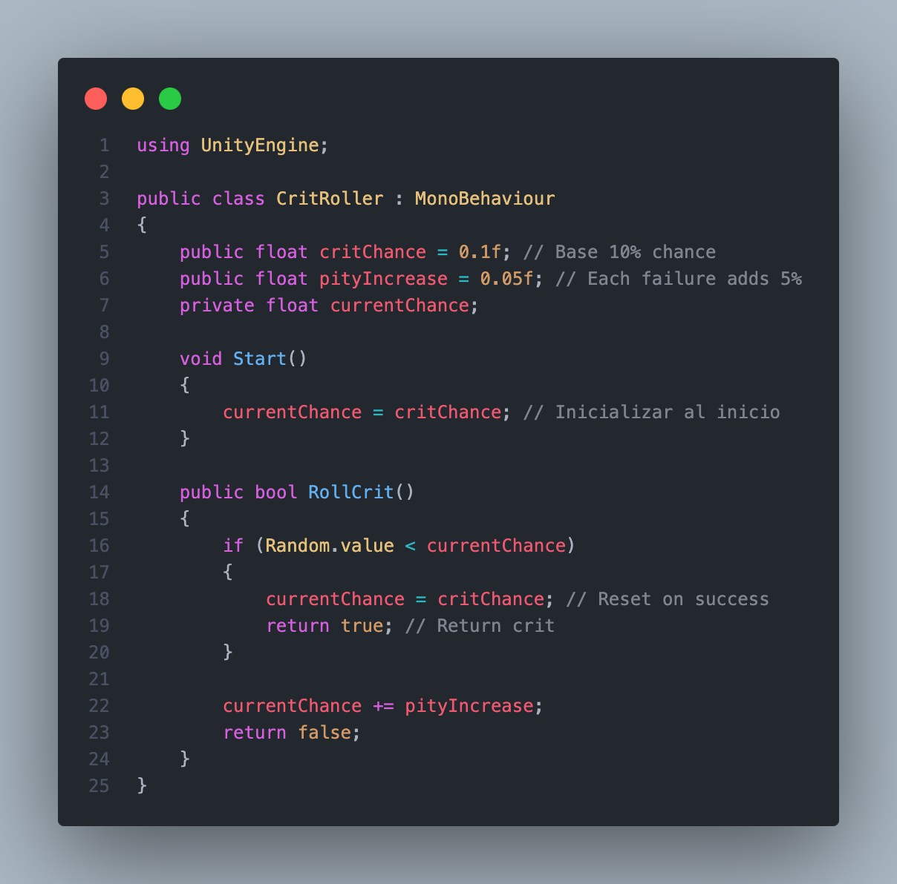

Randomness is a fundamental concept in video games, used to create dynamic and exciting experiences. From the generation of dungeons in The Binding of Isaac to the natures of Pokemon, the rewards of Monster Hunter quests or the player you get on a FIFA "chest", we have a wide range of options for you to choose from.
However, in programming, true randomness doesn't exist, since computers generate pseudorandom numbers.
This article explores how randomness affects the gameplay experience, from critical hits in RPGs to level generation and loot systems.
1. What is Randomness in Programming?
In programming, pseudorandom numbers are generated using algorithms that rely on a seed as a starting point. Although the numbers may appear random to the user, they are completely deterministic. This stands in contrast to true randomness, which is theoretical, unpredictable, and cannot be reproduced within a computational environment.
In other words, even though we call it "random generation," it's not truly random. When a computer is asked to generate a random number or sequence, it uses a seed (essentially a starting value or key) to produce a predictable sequence of numbers.
If the same seed is used again, the algorithm will always produce the same sequence of "random" values. This repeatability is a key characteristic of pseudorandom number generators (PRNGs), and it's both a limitation and a powerful tool.
For example:
- If a game uses seed
12345to generate a procedurally created level, the layout of that level will be identical every time the game is run with the same seed. - This makes it easy for developers to reproduce bugs, test features, or share exact scenarios with players or colleagues.
In summary, pseudorandomness behaves like a shuffled deck that always shuffles the same way when you give it the same instructions—helpful in development, but important to manage carefully if you want your randomness to feel organic to the player.
2. Controlled Randomness in Video Games
In game development, pure randomness is often avoided because it can lead to player frustration or unbalanced experiences. Instead, developers implement controlled randomness, a set of techniques that guide or adjust random outcomes to align with gameplay design goals.
Some examples of this controlled randomness are:
- Loot Systems – Diablo, Overwatch: These games use a "biased randomness" or "loot tables" to ensure players are rewarded in a fair and predictable way over time. For example, after a certain number of loot boxes, a rare item is guaranteed.
- Critical Hits – XCOM Series: XCOM uses a system where missed shots increase the hidden probability of future hits. This system smooths out frustration when a player experiences repeated bad luck.
- Card Draw – Hearthstone: Cards are drawn randomly, but deck construction and mulligan phases provide strategic control over probabilities.
This approach to randomization has some advantages over true random generation.
- Improved Player Satisfaction: Controlled systems reduce the feeling of unfairness. Players feel rewarded for persistence rather than punished by luck.
- Gameplay Balance: Developers can fine-tune randomness to avoid extreme outcomes that break difficulty curves or progression.
- Replayability with Reliability: You can offer varied experiences while maintaining structure and fairness.
However, it also has some disadvantages that are evident in:
- Loss of Surprise: Over-controlled randomness can feel predictable or manipulated, reducing the thrill of unexpected outcomes.
- Complex Implementation: Designing systems that feel fair and natural while still using randomness requires extra effort and testing.
- Transparency Issues: If players notice the system is “rigged,” even in their favor, it can break immersion or trust.
It also includes several common challenges to be considered when designing and implementing systems using this semi-random generation:
- Perceived Fairness vs. Actual Fairness: A mathematically fair system may still feel unfair if players don't understand the underlying mechanics.
- Random Fatigue: Too many outcomes left to chance can wear down player motivation, especially in competitive settings.
- Balancing Consistency with Variety: Ensuring the game feels different each time, without allowing luck to dominate skill, is a constant balancing act.
Ultimately, controlled randomness is not about removing randomness, but about shaping it to serve the player's experience. It’s a powerful design tool when used intentionally and transparently.
3. Practical Applications of Randomness in Video Games
Randomness plays a crucial role in shaping gameplay across a wide variety of genres. Its applications go far beyond just “rolling a dice”; it drives world generation, AI behavior, reward systems, and even narrative outcomes—each with unique goals and challenges.
One of the most recognizable uses is in Procedural Generation. Games like Minecraft or Spelunky generate their environments algorithmically, resulting in unique worlds or levels for each playthrough. This randomness boosts replayability and gives players a sense of discovery. However, ensuring these randomly generated spaces are still fun, balanced, and navigable is a constant design challenge.
Another important area is Enemy AI Behavior. Randomized elements—such as patrol patterns or combat tactics—can make enemies feel less robotic and more realistic. In stealth games, for example, slightly unpredictable movement can increase tension. However, randomness in AI must be handled carefully to avoid frustrating players with seemingly irrational or unfair decisions, especially in strategic or competitive settings.
Loot and Reward Systems are perhaps the most commercially exploited form of randomness. In games like Borderlands or Destiny, weapons and gear are generated with randomized stats, encouraging players to keep searching for the “perfect drop.” While this creates excitement and long-term engagement, it can also backfire if the odds feel unfair, or if progression becomes overly reliant on chance. Gacha systems in mobile games are a notable example: players are drawn in by the promise of rare characters or items, but the opacity of odds often leads to controversy, especially when monetization is involved.
Randomness is also used in more subtle ways, such as Puzzle and Event Variation. Games like Into the Breach or Darkest Dungeon randomize enemy placements, events, or character traits, ensuring that no two playthroughs feel exactly the same. This unpredictability keeps gameplay fresh, but requires a safety net in design to avoid unsolvable scenarios or extreme difficulty spikes.
Even in narrative games, randomness finds its place. Titles like Disco Elysium use randomized dice rolls for dialogue choices or skill checks, allowing story paths to branch in unexpected and memorable ways. This adds a layer of spontaneity to storytelling, though it can be tricky to ensure that each possible outcome still feels coherent and rewarding.
In short, randomness in video games is a tool for generating variety, surprise, and player-driven storytelling. When used thoughtfully, it transforms static systems into living worlds. But if left unchecked or poorly implemented, it can just as easily undermine the player's sense of control and satisfaction.
4. How to Properly Apply Randomness in Development
Applying randomness in game development isn't just about calling a random function and hoping for the best. It's about aligning random systems with your design goals—whether that’s creating suspense, balancing difficulty, or increasing replay value. Properly implemented randomness enhances player engagement without making them feel like they’re at the mercy of pure chance.
One key concept is the use of probability distributions. While uniform randomness (where every outcome has equal probability) is easy to implement, it’s rarely the best choice for game feel. Instead, developers often use distributions like the normal (bell curve) to generate more predictable but still variable outcomes, or Poisson distributions to model rare events like critical hits or loot drops.
Let’s say you want to design a random critical hit system that feels fair over time. A simple way to do this is with a “pity counter,” which increases the chance of a critical hit every time one fails. Here’s how that might look in pseudocode:
This technique is simple but effective. It prevents long streaks of failure while keeping the excitement of a sudden success. You can tune the base chance and increase factor depending on how generous or punishing you want the system to be.
It’s also important to test and iterate. Randomness needs balance: too much can feel chaotic, too little can feel repetitive. Tools like heatmaps, player telemetry, or simple logging can help you visualize how your random systems behave over many runs or sessions.
Lastly, always consider player perception. Even mathematically sound randomness can feel unfair if players don’t understand what’s happening behind the scenes. Sometimes it’s worth making odds slightly more forgiving than they seem—or communicating mechanics more transparently—to keep players satisfied.
In the end, randomness should feel like magic, not math. The goal is to surprise players, not confuse or punish them.
In conclusion, randomness is far more than a background mechanic; it's a fundamental part of how games create emotion, tension, and variety. From procedural generation to AI unpredictability and reward systems, its influence is everywhere. But effective randomness doesn't come from chaos; it comes from design.
When randomness is implemented with intention and balance, it enhances gameplay and keeps players engaged. But when it's left unchecked or poorly communicated, it can feel unfair, frustrating, or even manipulative. The difference lies in control, context, and player perception.
As a developer, understanding randomness is not just about generating numbers, it's about shaping experiences. Whether you're designing a loot system, a level generator, or an encounter mechanic, your job is to ensure that what feels random is, in fact, thoughtfully crafted.
So next time a player gets that perfect critical hit, uncovers a hidden cave, or opens a rare item drop, just remember: behind that moment of surprise, there’s a whole system working silently to make it feel just right.